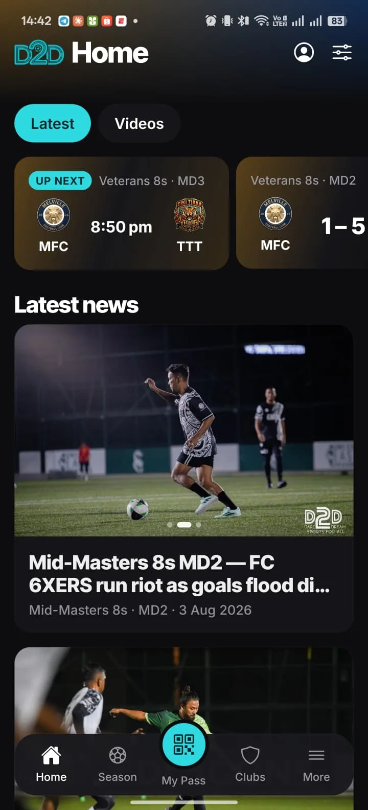

No WebGL and no library. The body is a stack of rounded silhouettes extruded along the Z axis, so the corners stay genuinely round and the rail catches a gradient that reads as brushed metal. Where the browser supports scroll-driven animations the whole sweep runs on the compositor with zero JavaScript in the scroll path; older browsers fall back to one small rAF loop.

Public sites, admin dashboards, operations portals and native apps — shaped around how the work actually happens, not around a template.
Not an agency taking briefs. I sit in the business, learn it, and build the software that runs it — then stay on.
Web, systems, apps and automation, live with real users and real money moving through them.
| Added weight | 0 KB — CSS and markup only; the screen reuses an image the site already ships |
| Scroll path | No JS at all where animation-timeline: view() is supported; one rAF loop otherwise |
| Limits | No real reflections, no lens depth, and no true perspective on the rail — it is a stack of planes, not geometry |
| Degrades to | A static angled device under prefers-reduced-motion; nothing to fail |
| Works on | Every viewport, including the low-end phones Variation B deliberately skips |